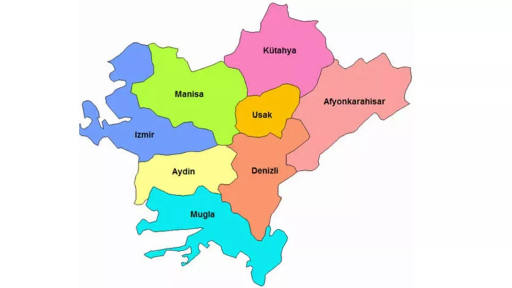

EGE BÖLGESİ

Türkiye'nin 7 bölgesinden birisi olan Ege
Bölgesi, ismini kıyısında olduğu Ege Denizi'nden alır.
Türkiye'nin en uzun kıyı şeridine sahip bölgesidir.
Tarihi mekanlar çoktur. Bu bölgenin iklimi Akdeniz iklimidir.
Nüfus ve Toplumsal Yapı
Kentleşmenin en yoğun yaşandığı bölge konumundadır.
Ege Bölgesi'ndeki kentler, çoğunlukla ana yolların geçtiği yollar
oluklar ve verimli ovaların kenarlarında yer alır; kıyı kesiminde ise körfezlerin kenarlarında
bulunur.
- Ege Bölgesi'nde bulunan bazı iller
- Afyonkarahisar
- Aydın
- Denizli
- İzmir
- Kütahya